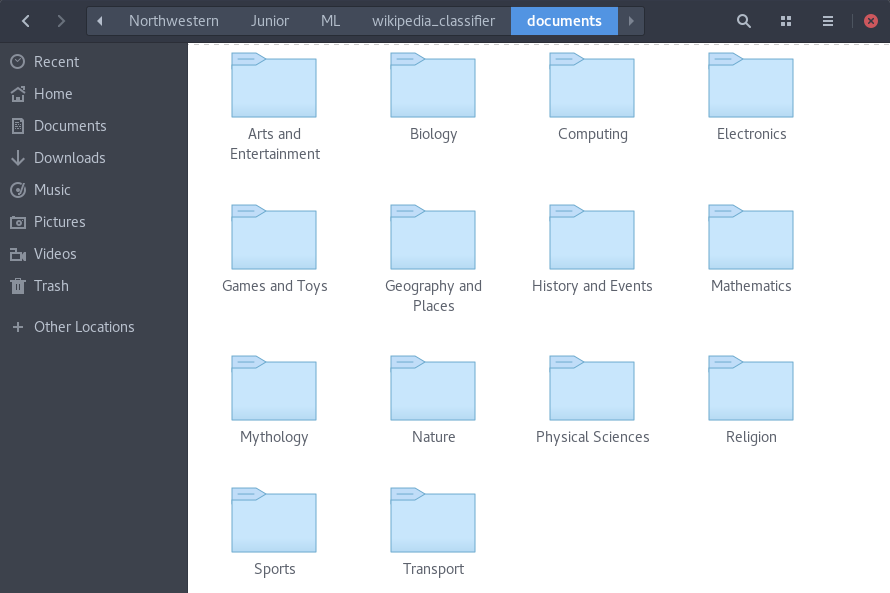
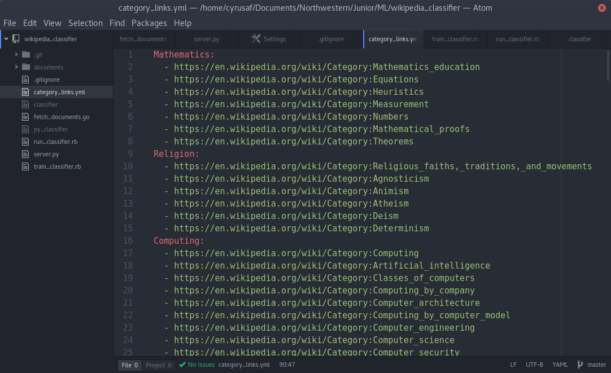

Document classification has many modern day applications. Google has used document classification successfully for spam dectection in Gmail and for language identifcation in Google Translate. Our goal is to use document classifcation to classify a new Wikipedia article under an existing Wikipedia category. The motivation behind our goal is to automate a step of the process of automatically creating new Wikipedia articles - the step where the article is given a category.
After collecting the categorized articles from Wikipedia, we trained a Naive Bayes classifier. We used the Naive Bayes implementation from the Python package sklearn, and we used Pandas dataframes to manipulate the dataset. We can pass in a string of text to our Naive Bayes classifier and it will return the category that has the highest probability of containing the passed in text.
The bulk of our work was the data collection process. Since there are thousands of documents that we needed to retrieve from Wikipedia, we had to create a efficient and concurrent retreival method. We also had to tweak the structure of the dataset for the best results. How many categories should we have? What should the categories be? How specific should the categories be? We used Wikipedia's categories to provide a basis of where to start.
We used 10 fold validation to test our Naive Bayes classifier. 1/10th of the dataset was randomly choosen to be the testing data, while the other 9/10ths were used for training. We tested our dataset using five, ten, fifteen and twenty categories. The results are below:
Our task is to predict the category that a body of text belongs to. We use Wikipedia’s list of categories to define our outputs - and the body of each article (under a category) as the training data for the outputs. Our has mainly focused on retrieving the data from wikipedia in a timely manner. We will first talk about our methodology of retrieving the data, then we will talk about how we structured the data, and finally we will discuss our results. We set out to determine how changing the number of categories of the classifier alters the precision of the classifier.
In order to retrieve the data we had to scrape 50,000+ articles from wikipedia. Originally we were using 500,000+ articles (for 500+ categories), but we did not see great results with so many categories, so we reduced the number of categories to between 10 and 30. If we scraped the articles one by one and each http request took 0.2 seconds on average (a low estimate), it would take 3 hours to scrape all the pages. We managed to scrape all pages in less than 1 minute by taking advantage of Golang’s concurrency features.
Without going into too much detail, we have a seperate thread for each category, which scrapes the articles one by one in each category. This means that we can have many http requests going at once so that no time is wasted waiting for the http responses. We ran into an issue with having too many threads making requests would cause an error (due to too many concurrent http requests at once), so we modified the code to restrict the total number of threads to a number where the code ran smoothly (15 threads). We stored all the data in a hierarchy of folders where each folder is named after a category and within each folder are documents containing the body of the wikipedia articles in that category (see Figure 1).
We defined our categories in a YAML file (see Figure 2). The YAML file contained category names and a list of Wikipedia links to subcategory pages. Each subcategory page contains many links to Wikipedia documents - which our Golang script will retrieve and store on the hard drive.
Originally we used every single subcategory on wikipedia as a category (500+), but this caused our classifier to be highly inaccurate. We switched over to using the YAML configuration file so we could define our own custom categories and consolidate many subcategories within a single category. In order to test the effect that the number of categories has on accuracy, we made four different YAML configuration files - with 10, 15, 20, and 25 different categories respectively.